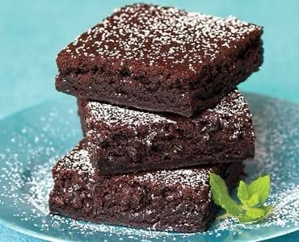

BROWNIES
Ingredientes
200 g. de mantequilla sin sal
180 g. de chocolate negro 70% mínimo (la marca que más os guste)
2 huevos L
225 g de azúcar normal o glas
30 g. cacao en polvo sin azúcar (os recomiendo el del 70%)
½ cdita. esencia de vainilla
120 g de harina de trigo
Opcional (en este caso no lleva): 50 g. de nueces troceadas
Preparar la masa
Derretimos el chocolate troceado y la mantequilla a baño maría.
Debemos ir removiendo en todo momento hasta conseguir una crema
homogénea. Para hacer el baño maría, pondríamos una cazuela al fuego
con agua y encima otra cazuela de forma que no toque el fondo.
Si no podemos hacer un baño maría en casa, podemos derretir el
chocolate con la mantequilla en el microondas. Calentaríamos el
chocolate con la mantequilla durante 2 minutos, retiraríamos, y
removeríamos. Repetiríamos la operación varias veces hasta conseguir
una mezcla lisa y brillante.
Dejaremos que la mezcla de chocolate y mantequilla se temple para
continuar el proceso de preparación del brownie de chocolate. Reservamos.
En un cuenco batimos los dos huevos con el azúcar, la esencia de vainilla y el punto de sal.
Cuando tengamos una crema espumosa la añadimos al chocolate que
enemos reservado y templado. Iremos añadiendo los huevos poco a
poco, integrándolos con el chocolate con la ayuda de unas varillas.
Incorporamos el cacao sin azúcar y la harina. Mezclamos con las varillas para integrar estos sólidos en la mezcla.
Horneado del brownie
Engrasamos un molde de unos 20 x 20 cm y lo forramos con papel de
horno. Vertemos la mezcla del brownie y golpeamos ligeramente para regular la superficie.
Precalentamos el horno a 170º C con calor por arriba y por abajo, sin la
opción de ventilador. Horneamos el brownie durante 40 minutos.
Cuando lleve ya 20 minutos en el horno tapamos con un poco de papel
de aluminio para que no se queme la superficie y la costra quede perfecta y crujiente.
